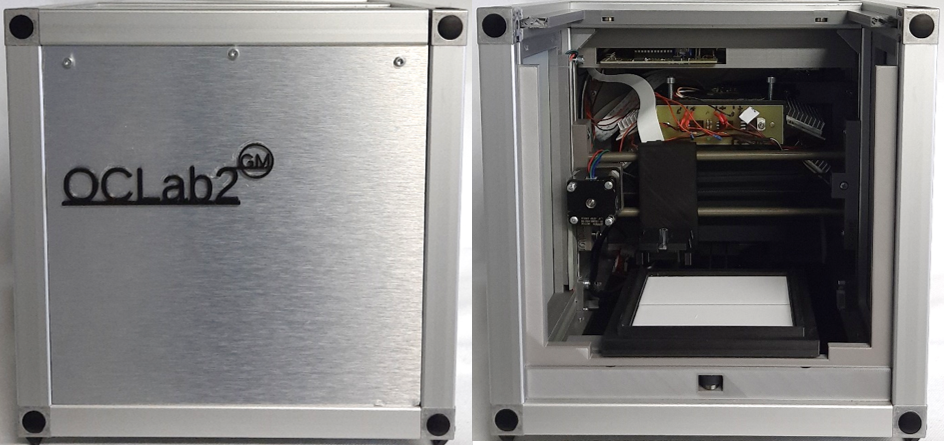

The former OCLab prototype of a “miniaturized all-in-one open source system for planar chromatography” was upgraded by an HPTLC plate visualizing cabinet to protect the plate from extraneous light during capturing of images, including RGBW, UV 278 nm and UV 366 nm LED boards as well as a Raspberry Pi V2 camera module.
Additionally, a newly designed printhead was manufactured, controlled by a self-constructed ink-jet board allowing to check the nozzles’ resistance heating circuit. Furthermore, plate heating was enabled, especially favorable when higher volumes of aqueous samples are to be applied.
The former OC Manager software was completely restructured and newly written in R to speed-up the processes (OC_manager2) , also supported by the new Raspberry Pi 4B computer with 4 GB RAM .
The 3D printed parts are in the folder 'Construction Set', the electronic boards are described in the folder 'Eagle Files', and the modified firmware is available in the folder 'Marlin'.